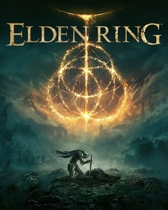
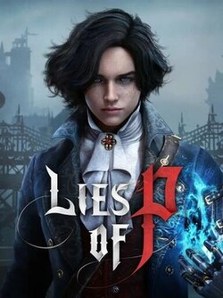
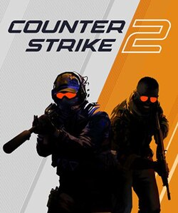
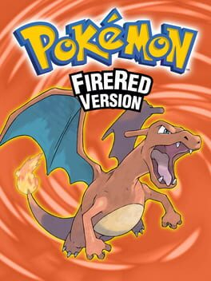
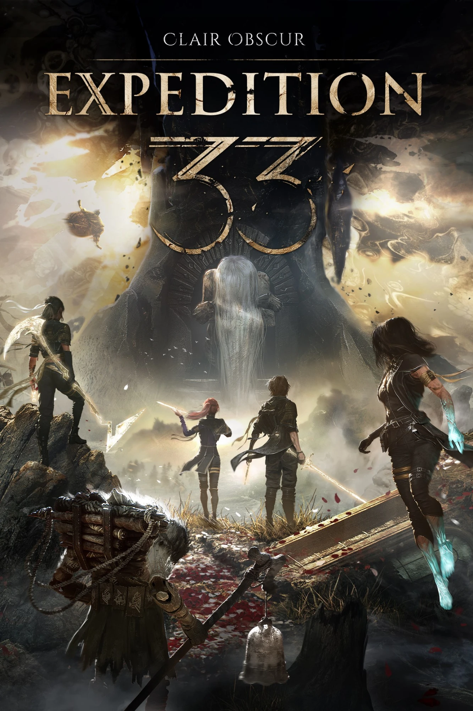
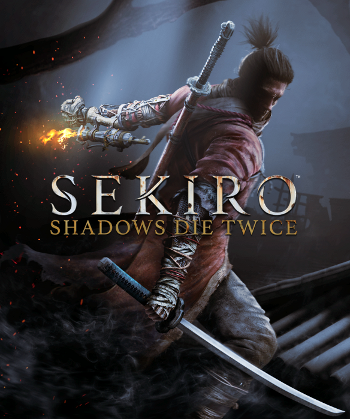

Howami
Sou estudante de engenharia da computação no CEFET (mas isso você já sabe), no sétimo período. Sou gremista (de vez em quando) e odeio o Inter (sempre).
Programo e brinco com computação desde os 14 anos, quando tentei fazer um fangame de Pokémon.
Biblioteca

Elden Ring
512 horas jogadas
Primeiro Souls que joguei "de verdade", e tem meu boss (des)favorito "Malenia Blade of Miquella".

Lies of P
156 horas jogadas
Esse aqui é uma obra de arte, o boss final da DLC me fez desinstalar o jogo.

Counter-Strike 2
4122 horas jogadas
Já fui global, mas todas essas horas são do falecido CS:GO. Jogasso.

Pokémon FireRed
incontáveis horas jogadas
Todo ano eu sou obrigado a jogar uma run de fire red, atemporal.

Clair Obscur: Expedition 33
103 horas jogadas
Melhor história e música em jogo que já vi.

Sekiro
192 horas jogadas
Dor.